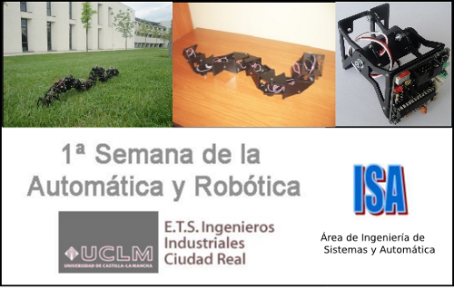

El próximo viernes 29 de Octubre daré una charla sobre Robots ápodos modulares en la
E.T.S de Ingenieros Industriales de la universidad de Castilla-La Mancha
(UCLM) dentro de la
1ª Semana de la Automática y Robótica.

Habrá demostraciones en vivo de robots modulares.